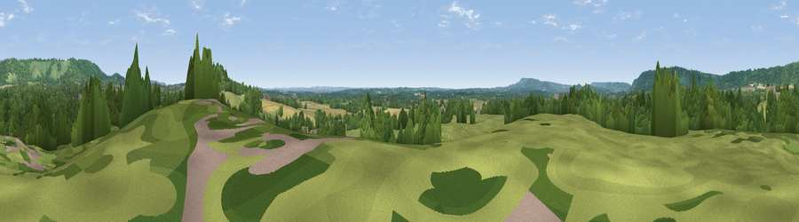

Viewpoint near Buckland
#38794 in England · top 40% of its area beats it · near Buckland · path 109 mWhere it is
The exact computed spot (TQ 23525 49575). Click the marker for map links.
Public access: the nearest public right of way is about 109 m away — the final stretch may cross private land. Computed from Natural England's CRoW access layer and OpenStreetMap rights of way — not the legal definitive map. Always verify locally.
The view, rendered

A 360° render of this exact spot computed from the terrain model, tree cover and land cover — summer colours, afternoon light, calibrated against photographs of famous viewpoints. Real trees, hedges and buildings will differ in detail.
The panorama
Grey silhouette: terrain skyline in each direction (720 bearings, Earth curvature and refraction included). Dashed green: skyline with trees (+15 m) and buildings (+8 m) as obstacles. Blue strip: how far the ground is visible on each bearing.
Where the view opens
Wedge length = distance to the farthest visible ground on that bearing (vegetation-aware). Rings at 10, 25 and 50 km.
What fills the view
46% grassland · 41% woodland · 10% cropland · 2% built-up
Angular shares of the visible panorama (visual magnitude), not map area. Landscape diversity 0.46 (0–1 Shannon).
Key numbers
More beautiful places nearby
The staircase of upgrades: each row has a higher view potential than everything closer. Driving times are estimates from straight-line distance, calibrated against real road routing — check an actual route before setting out.
| Place | Direction | Drive | Score |
|---|---|---|---|
| Viewpoint near Reigate | E · 1 km | ~3 min | 40.6 |
| Viewpoint near Lower Kingswood | N · 3 km | ~6 min | 67.7 |
| Viewpoint near Coldharbour | WSW · 11 km | ~21 min | 70.0 |
| Wolstonbury Hill | S · 36 km | ~55 min | 79.6 |
| Viewpoint near Westmeston | SSE · 37 km | ~56 min | 81.1 |
| Ditchling Beacon | SSE · 38 km | ~57 min | 81.8 |
| Edburton Hill | S · 39 km | ~58 min | 82.3 |
| Chanctonbury Ring | SSW · 39 km | ~58 min | 87.0 |
51.23200, -0.23216 · source: screening · position refined by local search. Computed location — check access rights before visiting.